Издания Виштынецкого
эколого-исторического музея и
эколого-исторического музея и
издания, подготовленные при
участии сотрудников учреждения
участии сотрудников учреждения

Виштынецкий эколого-исторический музей
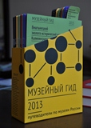
Виштынецкий эколого-исторический музей, Калининградская область// Сборник Музейный гид. Путеводители по музеям России - 2013.- Москва: Программа Благотворительногофонда В. Потанина "Первая публикция", Проектное бюро Спутник, 2013.- 28 с.
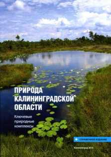
Природа Калининградской области. Ключевые природные комплексы
Роминтская пуща вошла в книгу как одна из важнейших ключевых природных территорий Калининградской области..
Природа Калининградсой области. Ключевые природные комплексы: Справочное пособие/Ф.Е. Алексеев, А.А Соколов, М.Г. Напреенко, Д.Б. Булгаков, В.В. Гусев, О.В. Рыльков и другие.- Калининград: Исток, 2014.- 192 с.
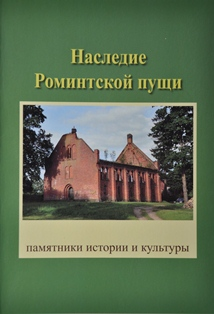
Наследие Роминтской пущи. Памятники истории и культуры
В книге обобщён результат инвентаризации объектов истории и культуры Роминтской пущи, проведённой в рамках международного проекта "Калининградская область. Знание и уважение истории=местный патриотизм=гражданское общество".
Наследие Роминтской пущи. Памятники истории и культуры/ А. Соколов, редактор К. Краевска.- Житкеймы, 2014.- 30 с.
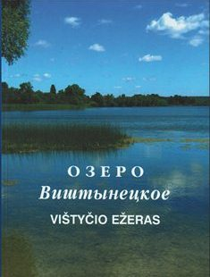
Озеро Виштынецкое
В книге обобщён результат многолетних комплексных исследований озера Виштынецкого, проводимых учёными Калининградского государственного технического университета и других учреждений.
Озеро Виштынецкое/Ответств. ред. К.В. Тылик, С.В. Шибаев. – Калининград: ИП Мишуткина И.В., 2011 . – 144 с.
Виштынецкие сокровища гномов. Музйная образовательная программа
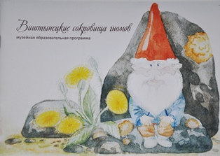
Брошюра используюется участники музейной образовательной программы "Виштынецкие сокровища гномов" как путеводитель и рабочая тетрадь
Виштынецкие сокровища гномов. Музейная образовательная программа/ А. Соколов, В. Ветивер.- КРОУ "Виштынецкий эколого-исторический музей", 2012.- 26 с.
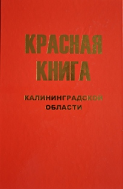
Красная книга Калининградской области
В книге описаны редкие и исчезающие виды растений и животных, а также экосистемы, требующие специальных мер по сохранению.
Красная Книга Калининградской области/ коллектив авторов; под ред. В.П. Дедкова, Г.В. Гришанова. – Калининград: Из-во РГУ им. И. Канта, 2010 . – 334 с.
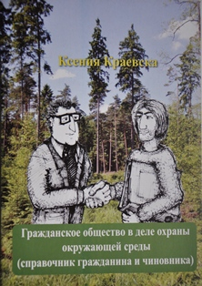
Гражданское общество в деле охраны окружающей среды (справочник гражданина и чиновника)
В книге представлены основные права граждан Российской Федерации на доступ к информации об окружающей среде и их участии в принятии решений в области её охраны.
Краевска К. Гражданское общество в деле охраны окружающей среды. Справочник гражданина и чиновника. - Голдап, 2013.- 28 с.
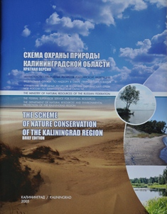
Схема охраны природы Калининградской области
В книге предложена и описана перспективная сеть особо охраняемых природных территорий в Калининградской области, обоснована необходимость создания её природного каркаса.
Схема охраны природы Калининградской области/ Под ред. Ю.А. Цыбина.- Калининград: Изд-во TENAX MEDIA, 2004.- 136 с.
Роминтская пуща. Что посмотреть и где остановиться.
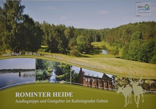
Информация о туристических услугах в Роминтской пуще
Роминтская пуща. Что посмотреть и где остановиться.- Бюро менеджмента туризма и регионального развития, Берлин, 2011.- 18 с.
Стратегический менеджмент в искусстве.
В книгу Лидии Варбановой (Канада) вошёл опыт работы КРОУ "Виштынецкий эколого-исторический музей" как пример успешной реализации собственного стратегического плана развития.
Lidia Varbanova. Strategic Management in the Arts. - 2012.- 358 p.
Набор почтовых открыток "Виштынецкий край"
{kind=link}
{kind=link}
{kind=link}
{kind=link}
{kind=link}
{kind=link}
{kind=link}
{kind=link}
Набор почтовых открыток "Виштынецкий край". – КРОУ "Виштынецкий эколого-исторический музей", 2006 . – 8 открыток.
Атлас культурных ресурсов Калининградской области
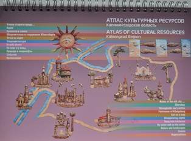
В книге, собрана информация о разнообразных уголках Калининграда и области, порой малоизвестных, но представляющих большой интерес и значение для её развития с точки зрения сохранения её природного, исторического и культурного наследия.
Атлас культурных ресурсов Калининградской области/Коллектив авторов. Идея и руководство проектом Ю. Бардун, Агентство поддержки культурных инициатив "Транзит". - Калининград: 2008.- 149 с.
Серия почтовых открыток
"Наследие Роминтской пущи"
"Наследие Роминтской пущи"
Серия почтовых открыток с изображениями и описаниями объектов историко-культурного наследия Роминтской пущи. Издана в рамках проекта "Музейная почта", 2014 г.
{kind=link}
{kind=link}
{kind=link}
{kind=link}
{kind=link}
{kind=link}
{kind=link}
{kind=link}
{kind=link}
{kind=link}
Серия почтовых открыток "Наследие Роминтской пущи". – КРОУ "Виштынецкий эколого-исторический музей", 2014 . – 10 открыток.
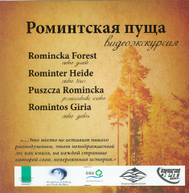
Роминтская пуща.
Видеоэкскурсия на CD-диске
Видеоэкскурсия на CD-диске
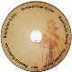
Видеоэкскурсия по Роминтской пуще с рассказами ведущих о её истории и природе.
Оригинальные съёмки Роминтской пущи с элементами реконструкции событий.
Роминтская пуща. Видеоэкскурсия/ Продюсерский центр ОРТ, Калининград, 2011. Компакт-диск - 29 минут.
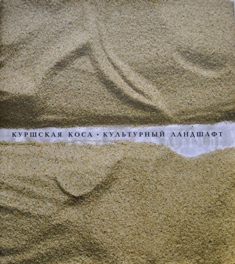
Куршская коса. Культурный ландшафт
Монография об одном из уникальных мест планеты - Куршской косе, её природе и истории.
Куршская коса. Культурный ландшафт/ В.И. Кулаков, В.А. Паевский, А.А. Соколов, Г.С. Харин и др. - Калининград: Янтарный сказ, 2008. - 432 с.
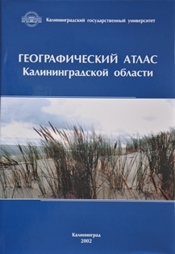
Географический атлас Калининградской области
Первое комплексное картографическое издание, в котором даны сведения об административном делении, природных условиях и ресурсах, населении, экологии, экономике и культуре Калининградской области.
Географический атлас Калининградской области / Гл. ред. В.В. Орлёнок.- Калининград: Изд-во КГУ; ЦНИТ, 2002.- 276 с.
2015 г.